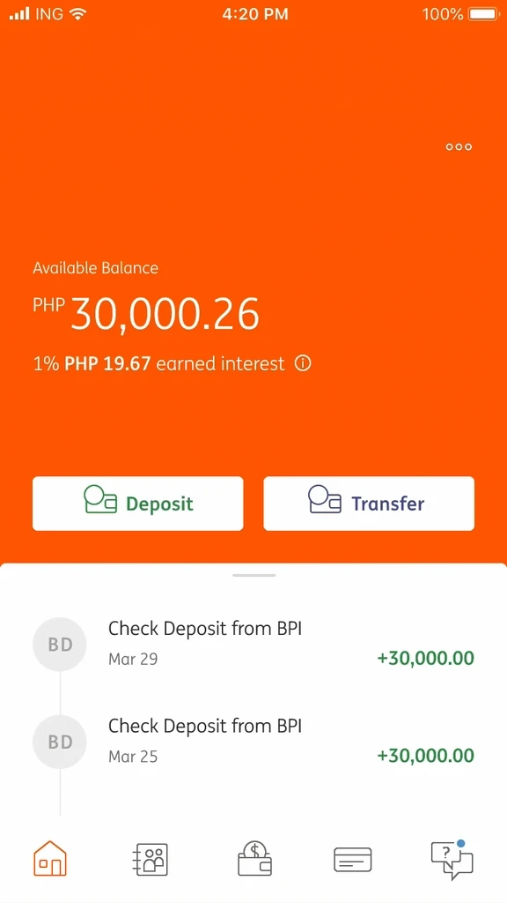
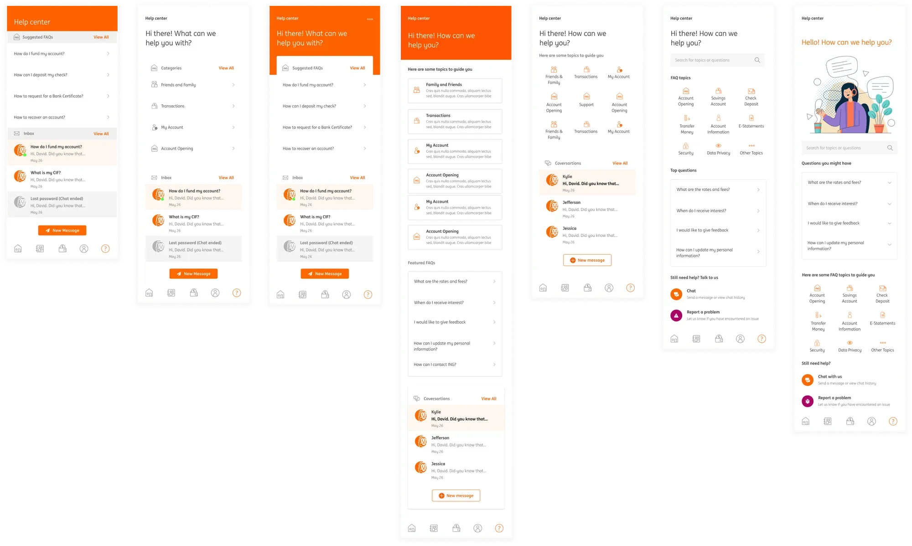
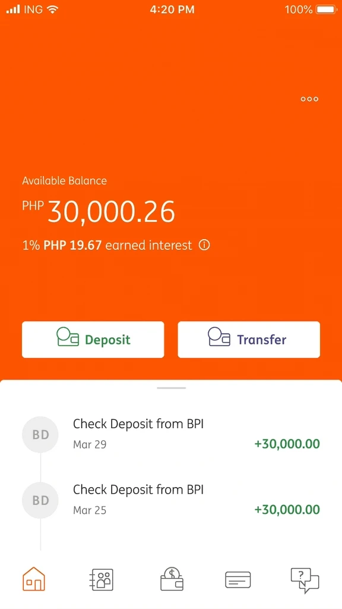
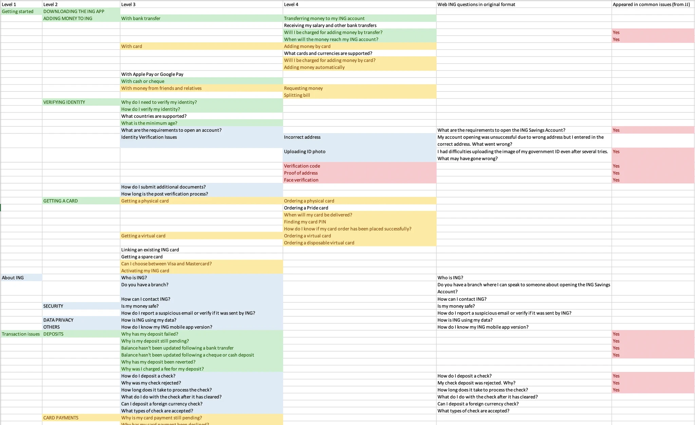

ING Help Center
Making ING's support experience a differentiator
How can we reduce the time it takes to resolve a customer issue?
Improved FAQ accessibility and content, added chat history, made chat asynchronous, and added a chatbot
23% reduction in customer waiting time. 15% reduction in average handling time.
Lead designer, worked on content analysis, information architecture mapping, visual design, prototyping, and usability testing
ING Philippines has two 24/7 customer service channels. In-app Messages work like email: customers send a message and get a reply, usually within 24 hours. Live Chat is for urgent concerns, where a customer care agent helps resolve the issue in real time.
The problem was that customers often waited ~10 minutes or more to reach an agent on Live Chat. That's a bad experience when you're trying to report fraudulent or unauthorized transactions.
Live Chat had also become the default channel, because customers couldn't find answers in the FAQ or on the website. With no way to prioritize chats, "trivial" queries took up agents' time. So ING's leadership challenged us with this:
"How might we reduce the time it takes to resolve a customer's issue when they reach out via Live Chat?"
Jobs to be done
- Primary: When a user with an issue contacts support, I want to address their issue as fast as possible so that they can get back to whatever they need to get done.
- Secondary: When a user contacts the bank about an issue, I want the experience to be pleasant so that they feel taken care of by ING.
Guiding principles
- Provide support as fast as possible: Customers shouldn't spend long waiting for an answer.
- Get it right the first time: We don't want customers coming back for the same issue.
- Minimize the time to a solution: If an issue has no true solution, we try to ease the customer's concern.
- Drive activation, retention, and engagement metrics: The solution should move the metrics that matter.
Why customers ended up waiting
FAQs were hard to find
In interviews, 11 out of 12 customers said they'd try self-service before contacting support. But in the app, they went straight to Live Chat and Send a Message and barely touched the FAQs. When I dug into why, the FAQ entry point turned out to be nearly invisible:
- Poor placement: It sat at the top right of the screen, an often-overlooked spot.
- Poor contrast: The thin line icon on the bright orange header failed contrast tests. Yikes.
- The floating action button has more affordance: The button for the messaging channels was bright orange on white, at the bottom left within easy reach of the thumb. Very, very easy to tap.

Self-service content was out of date
Marketing wrote the app's FAQs before launch, guessing at what customers might ask, and hadn't updated them in the two years since. The website's help content was updated more often, so the two no longer matched.
Chat transcripts weren't saved automatically
Regulations require the bank to keep records of its conversations with customers. The chat tool didn't save transcripts, so agents copied them by hand, adding 2-3 minutes to their average handling time.
Agents could only talk to one customer at a time
The bank usually had 3-4 agents available, each averaging ~15 minutes per chat. If more than 4 customers reached out at once, the rest had to wait.
Messages only arrived once a "connection" was made
Because of a technical limitation of the chat platform, customers had to actively wait for an agent to connect, tapping the screen to keep their session alive. If the session timed out, they were disconnected and had to queue again.
Five fixes, weighed by impact and effort
No single fix would solve everything. Leadership wanted a chatbot, but that couldn't ship quickly. So we looked at a range of improvements and judged each one on how well it served our jobs to be done, how much it changed the existing product, and how much effort it took to build.
Make FAQs more accessible
I redesigned Help Center so FAQs are the first thing customers see, encouraging them to look for answers before contacting support.
A few stakeholders wanted to actively discourage customers from using Live Chat. I disagreed. We want customers to self-serve first, but for "high-touchpoint, high-urgency" cases like reporting fraud or blocking a card, they should reach a human as fast as possible.
Level of change 2/5, effort 2/5, impact 5/5.


Improve Help content and structure
We studied how apps like Grab, Citibank, and Revolut structure their help sections, to learn which patterns our customers already understood. Then we compared what customers frequently asked and what was on our website against the structure we wanted.
Level of change 1/5, effort 2/5, impact 3/5. This was also a prerequisite for the chatbot.


Add chat history
Previously, chats with instructions or solutions disappeared when they ended. Chat history keeps them in one place for customers, and lets agents see past conversations without leaving the current one.
It also cut agents' after-chat work, like copying transcripts or re-sending instructions by in-app message, which took ~1 hour of each agent's day. Lower handling time meant agents could help more customers per day.
Level of change 2/5, effort 3/5, impact 5/5.

Make the chat asynchronous
We wanted to eliminate active waiting, so customers could put their phone down while waiting for the bank. With asynchronous chat, customers send messages without waiting for an agent to connect, and the agent reads them once they're available.
Level of change 5/5, effort 5/5, impact 5/5.

Add a chatbot
We made a chatbot! (It was a lot of work and really needs its own case study.)
Customers still reached out to support even when the answer was in the FAQs. The chatbot surfaces relevant FAQs right in the conversation. This is the main reason we restructured our Help content: it had to be concise and reusable across Help Center, the website, and the chatbot. Since Live Chat also integrates with FB Messenger, the ideal end state is the chatbot surfacing FAQs there too.
The chatbot also lets us prioritize by filtering out questions the FAQs can answer, so urgent concerns like a hacked account get faster help than a question about a delayed check deposit.
Level of change 5/5, effort 5/5, impact 5/5.

Key learnings
- Product analytics would have told us early whether we were on the right track.
- Sitting beside the customer care team is one of the fastest ways to find gaps.
- Collaborate with designers, engineers, and product stakeholders early and often.
- Test early and often with customers, especially for high-effort features.
- Micro-interactions are great for communicating small, important nuances.
- For customer support features, the experience has to be fast and the communication clear.